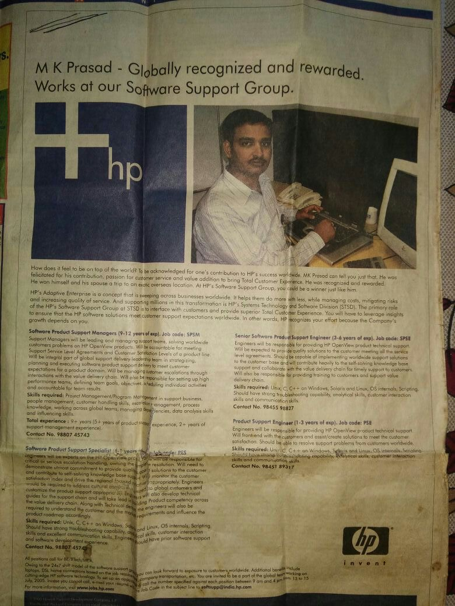

43 Verified Employee Awards · 18-Year Continuous Service · Global Technical Excellence & Customer Impact
43
★★★★★
Verified Awards
Manager Awards
29
Peer / Sales
13
HP / HPE Era
18
MF / OpenText
25
18
Year Span
2005 – 2023
BEST IDEA AWARD
MF
Micro Focus / OpenText — Global Innovation & Architecture
Company-Wide Recognition · Costwise ML Cost Optimization
Costwise — ML Cloud Cost Optimization Engine saving $1M+ across the enterprise
"Architected Costwise, an ML-based cloud cost optimization solution that won the company-wide Best Idea Award and saved $1M across the organization by automatically detecting idle EC2 instances, unattached network gateways, dormant RDS databases, orphaned filesystems, and unreferenced S3 objects."
Best Idea AwardFinOps & ML$1M+ SavingsCloud Architecture
Verified Corporate Innovation Award · Micro Focus / OpenText
GLOBAL FEATURE
HP
Hewlett-Packard — Software Support Group
National Newspaper Feature · circa 2005 · Global Recognition & Reward

HP National Press Feature · Software Support GroupClick to inspect original published feature article and overseas award trip announcement →
M K Prasad — Globally recognized and rewarded · Featured in national print media by HP
"How does it feel to be on top of the world? To be acknowledged for one's contribution to HP's success worldwide. MK Prasad can tell you just that. He was felicitated for his contribution, passion for customer service and value addition to bring Total Customer Experience. He was recognized and rewarded. He won himself and his spouse a trip to an exotic overseas location. At HP's Software Support Group, you could be a winner just like him."
Focus on the UserIntegrity & TrustDeliver Impact at ScaleTechnical Excellence
Verified HP Global Recognition — National Newspaper Publication
AK
Ashish Kumar Banerjee
Engineering Manager, HP/HPE · January 2016 · Manager-to-Employee Award
Complete ownership of quality — 156 test cases identified and executed in just 2 days
"Thank you for taking complete ownership of quality for SPDB deliverables. You have not only identified test cases but executed 156 test cases in span of just 2 days. You have demonstrated your passion for quality and your work has helped HP deliver better quality HF to SPDB."
Ownership MentalityTechnical ExcellenceMove Fast, Stay RigorousDeliver Impact at Scale
Verified HPE MyRecognition Award
AK
Ashish Kumar Banerjee
Engineering Manager, HP/HPE · June 2016 · M2E: Bias for Action Award
Led the team to cut CDTR incident backlog 50% — restored Exelon's confidence in OA 12
"You have led the team to resolve high CDTR Incidents. Your leadership and commitment helped the team to reduce the CPE backlog of CDTR cases by a high margin (50%). You have turned around the situation for Exelon and helped them to regain confidence in OA 12 release."
Focus on the UserOwnership MentalityDeliver Impact at ScaleMove Fast, Stay Rigorous
Verified HPE MyRecognition Award
TS
Tapan Shah
Senior Technical Consultant, HPE · February 2017 · Peer-to-Peer: Partnership First Award
True partner in success — 1-to-n contributions across multiple Fortune 500 customers
"You have been doing amazing for our customers. There are a number of occasions wherein I was in a situation and you have sailed me through with your excellent product knowledge and extraordinary experience — nailing down NNMi-OMi integration issues at NEX where without your awesome finding, we would not have been able to finish a 4-hour WebEx successfully! Your inputs for best practices in managing agents in load balanced environments for GM is highly appreciated and we have used the similar concepts at many other customers — this is a true example of 1-to-n contribution(s)!! You are a true partner in success!!"
Focus on the UserAnalytical RigorSimplicity at ScaleThink 10x
Verified HPE MyRecognition Award
AK
Ashish Kumar Banerjee
Engineering Manager, HPE · February 2017 · M2E: Bias for Action Award
Root-caused a complex discovery issue at Eagle where others only fixed symptoms
"While the maxQuery issues were closed across many accounts, you were able to root cause the discovery issue at Eagle. This was a complex case — we tried to fix only symptoms but finally we were able to find the root cause."
Analytical RigorData-Driven JudgmentFocus on the User
Verified HPE MyRecognition Award
FS
Fred Fritz Shad
Sales Director, Micro Focus · January 2019 · Employee-to-Employee Award
Exemplary contributor — knowledge and experience drive new wins and keep customers loyal
"Thank you for doing a remarkable job helping deliver meaningful services and deliverables to our customers. Your relentless efforts and handling of numerous customer requests are phenomenal. Without you on the team all these requests will still be undelivered. Your ideas and recommendations are remarkable and drive MicroFocus Software business forward. Your knowledge and experience are always beyond par and unquestionably help us sell additional business and win new deals. You are an exemplary contributor and a difference maker in this organization!"
Focus on the UserDeliver Impact at ScaleThink 10xIntegrity & Trust
Verified Micro Focus MyRecognition Award
FS
Fred Fritz Shad
Sales Director, Micro Focus · May 2019 · Employee-to-Employee Award
Pillar of Micro Focus — resolved the nation's largest 911 call center issue, after-hours and weekends
"You did it again! Thank you for your incomparable dedication and hard work — after-hours, weekends and nights to help us fix problems. Your phenomenal work to bring resolution to one of the largest 911 call centers in the United States is exemplary and will go a long way for retaining this major customer. Employees like you are the pillars of Micro Focus Software and true difference makers in this company."
Focus on the UserOwnership MentalityDeliver Impact at ScaleIntegrity & Trust
Verified Micro Focus MyRecognition Award
PB
Patrik Batsching
Engineering Manager, Micro Focus · June 2019 · Manager-to-Employee Award
Key developer of OpsB troubleshooting tools — published on ITOM Marketplace for all global customers
"YOU are the key developers of the first release of the troubleshooting tools package for containerized OpsB (published on ITOM Marketplace) — thank you very much! These tools are really cool extensions and must-haves for everyone. I really appreciate your agile 'can-do-it' attitude and fruitful x-functional team interaction."
Simplicity at ScaleFocus on the UserThink 10xMove Fast, Stay Rigorous
Verified Micro Focus MyRecognition Award
FS
Fred Fritz Shad
Sales Director, Micro Focus · June 2020 · Employee-to-Employee Award
Unprecedented quality — brilliant problem-solving directly secured USD $700,000 in new business
"The way you handled the Operations Bridge escalation for Intrado e911 emergency safety services showed flexibility, experience, knowledge, and critical thinking. Your level of quality work remains unprecedented in our organization. Your brilliant problem-solving skills helped us to demonstrate the value of Micro Focus solutions and will help us finalize business for more than USD700,000."
Focus on the UserDeliver Impact at ScaleAnalytical RigorThink 10x
Verified Micro Focus MyRecognition Award
FS
Fred Fritz Shad
Sales Director, Micro Focus · August 2020 · Employee-to-Employee Award
FCC certification in record 27 minutes — meeting a mission-critical deadline without compromise
"Thank you for your tremendous help to facilitate the FCC certification at Intrado 911 infrastructure monitoring command center in record time of 27 minutes. Without your knowledge, expertise, diligence and hard work, we would not have been able to meet the deadline. We are fortunate to have employees like you. YOU ROCK!"
Deliver Impact at ScaleMove Fast, Stay RigorousFocus on the UserTechnical Excellence
Verified Micro Focus MyRecognition Award
NP
Ning Pan
Regional Manager (APAC), Micro Focus · August 2020 · Manager-to-Employee Award
Amazed by professionalism, devotion, and will to win — Telstra's most critical escalation
"I am amazed by your professionalism, devotion, persistence and will to win when managing the Telstra escalation! I am happy to have you help out this highly visible hot escalation!"
Focus on the UserOwnership MentalityIntegrity & Trust
Verified Micro Focus MyRecognition Award
NP
Ning Pan
Regional Manager (APAC), Micro Focus · September 2020 · Manager-to-Employee Award
"I want to let you know the amazing job of Prasad for helping Telstra successfully complete OBM upgrade, which lasted about 28 hours. Prasad started WebEx at 4am to resolve issues during the upgrade right after getting notification. This group's collaboration, persistence, determination, will to win and never give up spirit is truly outstanding! You all are the best!"
Ownership MentalityFocus on the UserDeliver Impact at ScaleIntegrity & Trust
Verified Micro Focus MyRecognition Award
PB
Patrik Batsching
Engineering Manager, Micro Focus · September 2020 · OpsB SWAT 100th Session Award
2 years of cross-org innovation — tools invented and published on ITOM Marketplace across 100 SWAT sessions
"We like to recognize YOU for your very active participation in the 'OpsB Health Check Automation' SWAT initiative and your very valuable contributions in the last 2 years. We just ran our 100th weekly session. Key contributions include: OBM TraceGUI, Troubleshooting toolkit for CDF, K8S aliases (now part of CDFDoctor), OBM self-monitoring MP — all invented, published on ITOM Marketplace, and regularly improved. This is an excellent example of x-team working together across org boundaries."
Simplicity at ScaleFocus on the UserThink 10xTechnical Excellence
Verified Micro Focus MyRecognition Award
CV
Cristian Venegas
Engineering Manager, Micro Focus · July 2022 · Manager-to-Employee Award
Self-made expert — considered one of the most knowledgeable engineers in the team
"Prasad has owned the system health portal (among other activities) in the OpsB team. He has become an expert on this area, making the path by himself. His product mastery has helped others on their tasks and he is considered one of the most knowledgeable engineers in the team. Thanks Prasad for all your work and for sharing all your knowledge with us!"
Ownership MentalityAnalytical RigorIntellectual CuriosityRaise the Bar
Verified Micro Focus MyRecognition Award
BK
Brindusa Kevorkian
Engineering Manager, OpenText · June 2023 · FY23 “Being an Expert” Award
Insurmountable challenge → elegant solution — EKS DR methodology now productized for all OpsB customers
"Thank you for validating and implementing the EKS DR solution on all the existing environments. What looked like an insurmountable challenge turned into an elegant solution we can now productize for other OpsB customers using EKS. Your hard work and attention to detail paid off and we were able to restore the environments with minimal interruption and without data loss."
Simplicity at ScaleThink 10xDeliver Impact at ScaleFocus on the User
Verified OpenText MyRecognition Award
AB
Antonio Borges
Technical Success Manager / Cloud Administrator · March 27, 2026 · Different teams
Asset to any team — exceptional adaptability across roles and technologies
"I had the pleasure of working with Prasad for many years, and during that time, I came to appreciate his technical expertise and unwavering dedication to customers deeply. I often relied on Prasad during complex escalations, and he consistently delivered solutions that helped diffuse challenging situations. Throughout our time working together, I also watched him transition between roles and support different products with remarkable ease. No matter the assignment, he performed at a high level as if he had been working with those technologies for years. His ability to quickly adapt, learn, and excel is truly exceptional. With full confidence, I highly recommend Prasad for any technical role he pursues. He would be an asset to any team."
Focus on the UserIntellectual CuriosityDeliver Impact at Scale
Verified LinkedIn Recommendation
TL
Thierry Ledent
Master Technologist — SWAT Engineer, Micro Focus · February 11, 2026 · Different teams
Clear leadership and deep technical analysis under pressure — always a relief to have him involved
"I had the opportunity to work with Prasad many times on complex software problems with high visibility in the organization. It was always a relief to know that he was involved, because it meant that the problem would be managed with clear leadership, acute and deep technical analysis, fast and high quality resolution, irrespective of the amount of pressure that we would experience. I was also lucky to have Prasad as an approachable expert colleague for the amount of knowledge that he shared, and the quality of the products that his team delivered under his technical leadership."
Analytical RigorTechnical ExcellenceRaise the BarIntegrity & Trust
Verified LinkedIn Recommendation
SP
Sandeep P
CPE Lead (Expert) / Patch Release Lead, OpenText (formerly MicroFocus) · February 7, 2026 · Same team
Technology-agnostic leader who empowers everyone around him
"I've had the privilege of being mentored and led by Prasad since the day I joined HP/HPE/Micro Focus/OpenText, and he continues to be one of the most exceptional leaders I've worked with. From day one, he makes new team members feel supported, guiding them through product onboarding with clarity and patience. Prasad has an incredible ability to troubleshoot and resolve even the most complex customer issues. His calm, structured, and hands-on approach to live debugging consistently earns appreciation from customers across the globe. He is truly technology-agnostic — equally comfortable working across a wide range of programming languages (C, C++, Java, Python, Perl, Shell scripting, JavaScript, VBScript, PowerShell, Go), operating systems (Windows, Linux, HP-UX, AIX, Solaris), and all layers of the software development lifecycle. His expertise extends to modern containerization technologies like Docker, Kubernetes, and Helm, as well as cloud platforms including AWS, Azure, and GKE. Prasad is the epitome of modesty, passion, and leadership. He leads by example, empowers everyone around him, and inspires excellence in the teams he works with."
Focus on the UserRaise the BarAnalytical RigorIntellectual Curiosity
Verified LinkedIn Recommendation
CM
Chris Matye
Principal Premium Support Engineer / Technical Account Manager, OpenText · February 6, 2026 · Different teams
Highly reliable in critical situations — expert diagnostics across cloud, Java, and Kubernetes
"I've had the pleasure of working with Prasad M.K., and I can confidently say he is an exceptional engineer with very strong troubleshooting skills. Prasad has an impressive ability to quickly isolate complex issues in code and identify root causes, which consistently leads to fast and effective resolutions. He brings deep technical knowledge across Java, cloud technologies, and Kubernetes, and is especially effective at diagnosing and fixing cloud and container-related issues. His hands-on experience, combined with a strong understanding of underlying systems, makes him highly reliable in critical situations. Prasad is proactive, detail-oriented, and a great problem solver. He would be a valuable asset to any team working with modern cloud-native and distributed systems, and I highly recommend him."
Analytical RigorData-Driven JudgmentFocus on the User
Verified LinkedIn Recommendation
TM
Tobias Mauch
Senior Current Product Engineer, OpenText · February 5, 2026 · Different teams
Highly skilled, great team player, strong AWS SaaS and Java expertise
"I've had the pleasure of working with Prasad M K for several years. He is highly skilled and knowledgeable. He brings exceptional attention to detail and has excellent troubleshooting skills. Most recently, he worked on projects in the Cloud (AWS) and helped with technical aspects of our SaaS solution. He also has a lot of experience with Java and C/C++ development of Enterprise Software. He is a great team player. I can highly recommend Prasad M K."
Principal ITOM Strategist & Solutions Architect, OpenText · February 4, 2026 · Different teams
Quick to learn new technologies — always willing to take on new challenges
"Prasad M K is a highly skilled and knowledgeable engineer with strong expertise in OpenText OpsB products. He is very technical, quick to learn new technologies, and always willing to take on new challenges. I highly recommend Prasad for any role that values technical excellence and continuous learning."
Intellectual CuriosityMove Fast, Stay Rigorous
Verified LinkedIn Recommendation
SK
Sandeep Kumar Swain
Lead Cloud Applications Engineer · Ex-MicroFocus · Ex-HPE · June 2, 2025 · Same team
Built SaaS Operations from scratch — stays calm under pressure, always two steps ahead
"Prasad is one of the most dedicated and collaborative professionals I've ever worked with. During our time together at HP/HPE/MICROFOCUS/OPENTEXT, he has played a crucial role in SaaS Operations from scratch. His ability to solve complex problems, communicate effectively, and stay calm under pressure made a huge difference in our team's success. Excellent knowledge of Coding and ability to learn technology. He is a great person to work with which makes the work environment better and more enjoyable. Anyone hiring Prasad will see the growth in the team and for the Company."
Simplicity at ScaleOwnership MentalityDeliver Impact at Scale
Rock star of the Ops Agents team — solid technical lead, quick learner
"I've worked with Prasad for quite a number of years as a peer engineer and as a manager. Prasad is a great asset and was the rock star of the Ops Agents team. He is a solid technical lead, a quick learner and has excellent problem-solving skills."
Analytical RigorDeliver Impact at ScaleIntellectual Curiosity
Verified LinkedIn Recommendation · Former Direct Manager
AC
Abhijit Chakraborty
Software Engineer, OpenText · February 3, 2026 · Same team
Our one-stop solution — technically always two steps ahead of the entire team
"Our one stop solution to our problems. Whether it be complicated use cases from the customer where our product was not working, or our own in house testing scenarios, Prasad was the go to man for solutions. He is very much customer driven and is always aligned with what the customer wants and how the customer thinks which help shape the product. Also technically he was always two steps ahead of the entire team. It was a real privilege for us when we were working with him."
Focus on the UserAnalytical RigorData-Driven JudgmentDeliver Impact at Scale
Verified LinkedIn Recommendation
CP
Carlos Pinto
Technical Account Manager & Strategic Support Manager, OpenText · June 3, 2025 · Different teams
One of the best professionals — the kind any company would want as an employee
"I have worked with Prasad M.K. for many years and he always has shown great technical skills, teamwork, and always ready to help — one of the best professionals I worked with and that any company would like to have as employee."
Integrity & TrustTechnical ExcellenceFocus on the User
Verified LinkedIn Recommendation
HP Global Recognition Feature · Press Announcement & Exotic Overseas Trip Award
Executive Summary
Technologist, Software Engineer, and Platform Architect with 25+ years designing, building, and operating mission-critical distributed systems at enterprise scale, including 8 years as sole SRE owner of an enterprise AIOps SaaS platform sustaining 99.99% SLA uptime across the Americas and cutting incident resolution time 45%. Proven record across high-throughput backend services (Java/Spring Boot, Go, Python, C/C++), cloud infrastructure (AWS, Azure, GCP), and enterprise customer environments—including directly managing telemetry infrastructure for Apple's Vertica data farm and resolving 100% of high-priority on-site escalations at Fortune 500 accounts (Apple, Samsung, Disney, FedEx, PG&E; recipient of HP's Global High Impact Award). Led a 50+ microservices Kubernetes migration that cut annual cloud spend by $2.1M, and built streaming telemetry pipelines processing 8TB/day at sub-second latency. Currently Solutions Architect / Technical Lead on a 70,000-user financial platform at Wipro/PNC, and actively engineering Agentic AI backend architectures on AWS Bedrock with multi-agent orchestration and RAG pipelines. Published researcher on AI agent security policies and trust-boundary frameworks, with a pending patent on Generation-Bound Cache Invalidation.
Reliability, Scale & Engineering Impact
99.99%SLA uptime sustained as sole SRE owner of a multi-tenant AIOps SaaS platform across the Americas for 8 consecutive years.
$2.1M / yrAnnual cloud infrastructure cost reduced through Kubernetes consolidation, right-sizing, and Terraform automation.
8TB / dayStreaming telemetry throughput sustained at sub-second latency via Kafka and Pulsar pipelines feeding real-time ML correlation.
100%Resolution rate on high-priority on-site escalations across Fortune 500 accounts (Apple, Samsung, Disney, FedEx, PG&E).
70,000Enterprise users served by Alert Management architecture with automated alerting detecting degradation in <5 minutes.
25+ YrsContinuous software engineering and systems architecture leadership, from C/C++ networking internals to modern Agentic AI.
Distributed systems design, microservices, RESTful API design, event-driven architecture, high-concurrency networking, active-active clustering & server pooling, test-driven development (TDD with JUnit/Mockito), data modeling, transactional workflows
Solutions Architect | Technical Lead · Pittsburgh, PA
SRESWE Own end-to-end architecture and production readiness for an enterprise microservices Alert Management System on OpenShift/Kubernetes with a full Dynatrace observability stack, defining SLO targets and automated alerting that detects performance degradation in under 5 minutes across 70,000 enterprise users.
SWE Design and build backend microservices in Java/Spring Boot with comprehensive JUnit/Mockito test coverage on critical paths, delivering high-throughput REST APIs for alert ingestion, policy evaluation, and event enrichment.
SWESRE Architect and maintain automated CI/CD pipelines via Jenkins, Bitbucket CI, and Terraform with integrated security scanning, sustaining 0% critical vulnerabilities in production.
SWE Architected and building a real-time, event-driven Kafka branch closure notification system, publishing closure events to downstream consumers so affected operations teams and banking services respond immediately without polling or manual coordination.
SRE Lead capacity planning and Platform-as-Code / runbook-as-code standards on Bitbucket, empowering on-call engineers to triage, diagnose, and remediate production incidents autonomously without escalation.
SRE Implemented Kubernetes Vertical Pod Autoscaler (VPA) across cluster environments for proactive workload resource allocation and cost optimization.
AI Lead organizational integration of GitHub Copilot and agentic AI tooling across development workflows, accelerating engineering velocity, boilerplate generation, and peer code reviews.
Kakudi
Software Engineer, Cloud & Pre-Sales AI Systems · Folsom, CA
AISWE Architected and built production Agentic AI systems on AWS Bedrock with multi-agent orchestration, RAG pipelines, vector retrieval, and automated CI/CD model deployment; developed conversational Voice AI agents interfacing directly with live operational datasets.
SWESRE Designed and deployed containerized cloud-native microservices on Kubernetes using Terraform-provisioned AWS infrastructure; authored Python automation and Ansible playbooks for operational workflows.
Leadership Spearheaded client discovery sessions, authored technical Statements of Work (SOWs), and scoped system architecture, cloud expenditure, and delivery milestones for enterprise and nonprofit client engagements.
Career Continuity Note: HP, HPE, Micro Focus, and OpenText represent 21 years of continuous engineering, product design, and platform leadership within the same core enterprise systems management product line—spanning on-premises system agents to today's cloud-native AIOps SaaS platform (joined through a corporate split and two acquisitions).
Micro Focus / OpenText
Site Reliability Engineering Lead / Principal Platform Engineer · Rocklin & Santa Clara, CA
SRE Progressed from DevOps Engineer to sole full-stack SRE owner of Operations Bridge Manager (OMi), an enterprise AIOps SaaS platform across the Americas; sustained 99.99% SLA uptime for 8 straight years and cut incident resolution time (MTTR) by 45% through deep Linux kernel diagnostics and packet-level tracing.
SREApple Directly ran Production Readiness Reviews (PRRs) and capacity planning for Apple's tenancy on the multi-tenant OMi platform, keeping Operations Agent and Performance Agent telemetry flowing through Cloud Optimizer into Apple's Vertica data farm; built the Operations Agent Deployment Server registry to orchestrate large-scale fleet rollouts.
SRECloud Led the end-to-end migration of 50+ microservices to Kubernetes/OpenShift, compressing multi-tenant provisioning time from days to 30 minutes and cutting annual cloud infrastructure cost by $2.1M through rightsizing and reusable Terraform automation.
AISWE Built the Automated Event Correlation (AEC) engine, a machine learning service that clusters alerts by topology relationships and historical event proximity, suppressing alert noise and isolating root causes during high-volume production incidents.
SWEMulti-Cloud Developed the Agent Metric Collector, a high-performance Go-based service pulling and normalizing performance metrics across AWS, Azure, and GCP into a central correlation engine for cross-cloud alerting.
SWEStreaming Engineered distributed Kafka and Pulsar telemetry streaming pipelines processing 8TB/day at sub-second latency with end-to-end delivery guarantees into centralized data lakes.
SWEArchitecture Designed and deployed server pooling for Operations Bridge Manager (OMi) supporting active-active configurations, enabling the platform to distribute load and fail over across pooled nodes with zero single points of failure.
AIFinOps Architected "Costwise", an ML-based cloud cost optimization solution that won the company-wide Best Idea Award and saved $1M across the organization by automatically detecting idle EC2 instances, unattached network gateways, dormant RDS databases, orphaned filesystems, and unreferenced S3 objects.
Governance Owned enterprise SOC2 compliance and disaster recovery (DR) strategy across the organization, leading quarterly access audits, security controls, and live failover exercises.
Hewlett Packard Enterprise (HPE)
Product Engineer | Software Designer · Sunnyvale, CA
SRE Sustained technical escalation leadership for Fortune 500 accounts through the historic HP/HPE corporate split, holding a 100% resolution rate on high-priority production incidents.
SWE Built an automated Patch Manager that coordinated hotfix packaging, validation, and rollout for Operations Agent, eliminating manual patch errors and customer-impacting regressions across Solaris, Linux, AIX, HP-UX, and Windows.
SWE Designed KPI collection frameworks and event back-sync modules for KVM, Helium, and vCenter hypervisors, streaming virtualization metrics into centralized observability platforms.
SWE Collaborated cross-functionally with R&D and product management to resolve customer-encountered defects, reducing days-to-resolve on critical field escalations.
Hewlett Packard (HP)
Product Engineer | Software Designer · Sunnyvale, CA & Bangalore, IND
SWE Scaled the C/C++ Back Box Communication Component from 2,000 to 10,000 concurrent connections and engineered a reverse-channel proxy that established bidirectional communication through a single outbound connection with zero inbound firewall rule changes.
SWE Led the IPv4-to-IPv6 migration of the Operations Agent networking stack with zero customer downtime; designed embedded Perl memory caching that enabled the agent to run two years continuously in mission-critical production environments.
SWE Developed a custom log hashing algorithm to identify meaningful state changes in system logs, eliminating over 60% of false-positive alerts across large-scale enterprise deployments.
SWE Engineered OA Core, an embedded performance data collector built on SQLite, providing Operations Agent with a lightweight local metric history store independent of external database servers.
Architecture Built the Manager-of-Managers deployment mechanism for Operations Agent, orchestrating authority across regional managers for high-availability backup coverage and follow-the-sun operational handoffs.
SRE Built a centralized installation repository for Operations Agent enabling remote, repeatable deployments at scale, reducing manual provisioning effort by 80%.
Leadership Resolved 100% of high-priority on-site escalations at Apple, Samsung, Disney, FedEx, and PG&E through architecture-level root-cause analysis; recipient of HP's prestigious Global High Impact Award.
ProcSys — Client: Cisco Systems
Software Engineer · Bangalore, India
SWE Engineered OpsXML, an intent-driven declarative framework for automating Cisco router configurations in C/C++ — pioneering early Infrastructure-as-Code (IaC) principles for physical networking hardware.
SWE Developed an interactive simulation and eLearning platform for Cisco networking devices, utilized by thousands of network engineers preparing for CCNA certification.
Enterprise Alignment & Standards: Partnered across product management, application engineering, and security operations at Wipro/PNC to define organization-wide SLO targets, Platform-as-Code standards, and automated deployment baselines serving 70,000 users.
Customer & Strategic Tenancy Management: Directly led operational readiness and reliability reviews for strategic enterprise accounts including Apple, partnering with Micro Focus/OpenText R&D and support directors to feed production telemetry into the product roadmap for 30+ SaaS deployments.
Pre-Sales & Solution Architecture: Led client discovery calls, authored Statements of Work (SOWs), and delivered architectural presentations at Kakudi, translating complex technical concepts into actionable deliverables for executive stakeholders.
Mentorship & Operational Excellence: Mentored junior and mid-level engineers in distributed systems design, Linux kernel diagnostics, and test-driven development; championed blameless postmortems and runbook-as-code culture.
Education
Master of Science (MS), Software EngineeringBITS Pilani
Bachelor of Engineering (BE), Computer Science & EngineeringUniversity of Mysore